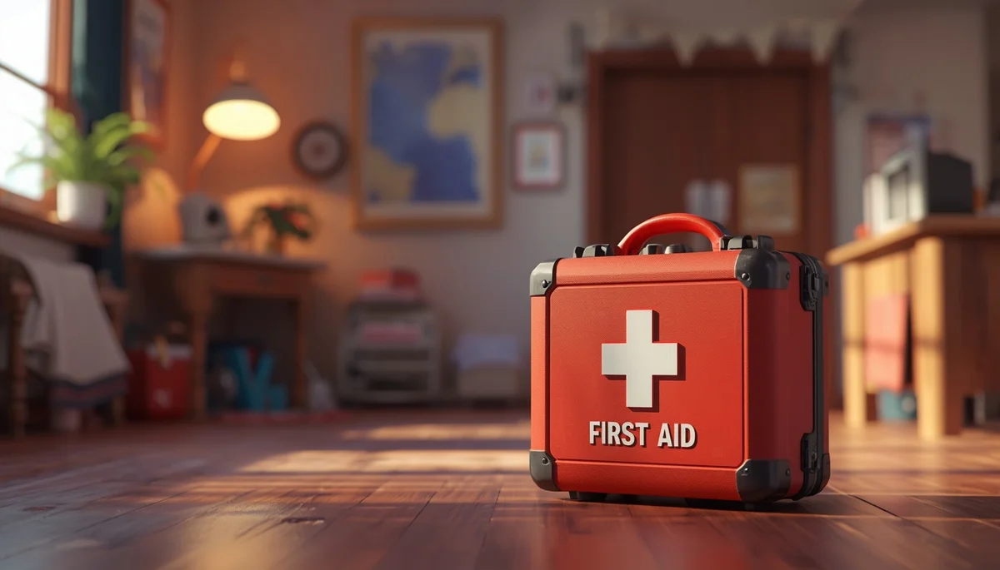
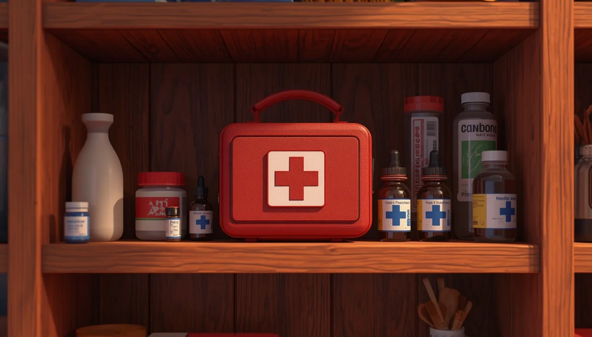

Ahogamientos, Quemaduras y Otras Urgencias Vitales
Cuarta y última parte de la guía de urgencias: protocolos de rescate en el agua, tratamiento de quemaduras y agentes químicos, e instrucciones claras para una llamada eficaz al 112.

Índice Detallado de la Cuarta Parte
Contenidos de urgencias avanzadas:
1. Protocolo de actuación ante un ahogamiento en el agua
El ahogamiento produce una privación repentina de oxígeno por la entrada de agua en las vías respiratorias. Una vez extraído el menor del medio acuático (piscina, playa o bañera), la velocidad y el método de respuesta inicial marcan la diferencia clínica.
- • Rescate y evaluación inmediata: Sacar al niño del agua con precaución y comprobar de inmediato su estado de consciencia y respiración tal como se detalla en el protocolo de soporte vital básico.
- • Prioridad de las ventilaciones: En los ahogamientos, la causa primaria de la parada es la anoxia (falta de oxígeno). Por ello, al iniciar la reanimación (si el niño no respira), es fundamental comenzar administrando 5 ventilaciones de rescate iniciales antes de pasar a las compresiones torácicas.
- • Manejo del agua aspirada: No pierdas tiempo intentando vaciar o "hacer vomitar" el agua de los pulmones o del estómago mediante maniobras de inversión o golpes en la espalda; gran parte del agua se absorbe de forma natural o es expulsada durante las propias ventilaciones y compresiones de la RCP. Concéntrate exclusivamente en ventilar y comprimir.
2. Gestión de quemaduras térmicas y exposiciones químicas
Las quemaduras en la infancia (por líquidos calientes, contacto con estufas, planchas o productos químicos) requieren una actuación rápida para frenar el daño tisular en la piel del menor, que es mucho más fina y vulnerable que la de un adulto.
- • Enfriamiento inmediato con agua: Aplicar agua fría (nunca helada ni hielo directo) de manera continua sobre la zona afectada durante al menos 15 a 20 minutos. Esto reduce la temperatura profunda de la quemadura y mitiga drásticamente el dolor.
- • Retirada prudente de ropa: Retirar con suavidad la ropa o pañales que no estén pegados a la piel. Jamás arranques prendas que se hayan fundido o adherido a la lesión quemada; corta alrededor de la tela y deja esa parte para la valoración médica.
- • Prohibido remedios caseros: No aplicar bajo ningún concepto pasta de dientes, aceites, mantequilla, pomadas caseras ni algodón sobre la herida, ya que aumentan el riesgo de infección grave y dificultan la limpieza quirúrgica posterior. Cubrir la lesión holgadamente con una gasa limpia o paño estéril húmedo.
3. Actuación ante sospecha de intoxicación o ingesta de tóxicos
Ante la sospecha o certeza de que un niño ha ingerido un producto de limpieza, un medicamento o una planta tóxica, la calma y el asesoramiento profesional inmediato son vitales.
- • Nunca provocar el vómito de forma autónoma: Inducir el vómito puede ser extremadamente peligroso (especialmente si se trata de productos químicos corrosivos o espumosos), ya que al salir queman de nuevo el esófago y aumentan el riesgo de que el tóxico pase a los pulmones.
- • Conservar la muestra o envase: Guarda el bote, etiqueta o resto del producto ingerido para poder mostrárselo o describírselo con total exactitud al personal médico o al servicio de toxicología.
- • Contacto con urgencias toxicológicas: Llama de inmediato al servicio de emergencias médicas (112) o al Instituto Nacional de Toxicología aportando los datos del producto, la cantidad estimada y el peso aproximado del menor.

4. Guía definitiva para realizar una llamada de emergencia eficaz al 112
Cuando los nervios atenazan en una situación crítica, saber qué información demanda el operador del centro de coordinación de urgencias agiliza la llegada de la ambulancia o el equipo médico especializado.
- • Mantener la calma y hablar con claridad: El operador está entrenado para guiarte; responde de forma concisa y directa a sus preguntas.
- • Información clave a transmitir:
- 1. Qué ha ocurrido: Especificar claramente si es un atragantamiento, un ahogamiento, una parada cardiorrespiratoria, una quemadura grave o una intoxicación.
- 2. Dónde estás exactamente: Dirección postal completa, localidad, puntos de referencia visibles o ubicación exacta si se llama desde un smartphone.
- 3. Estado actual del menor: Indicar si el niño respira, si está consciente o si se están realizando maniobras de reanimación en ese preciso instante.
- • No colgar el teléfono: Mantén la línea abierta (utiliza el manos libres si estás solo realizando la RCP) hasta que el operador te indique que los recursos sanitarios están en camino o te transfiera con el equipo médico de emergencias para recibir instrucciones telefónicas avanzadas.
Conclusión de la guía: La formación, la prevención activa y la serenidad ante el imprevisto son los mejores escudos protectores que una familia puede ofrecer a sus hijos.